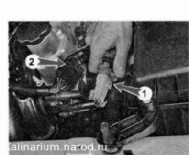
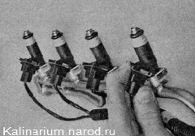
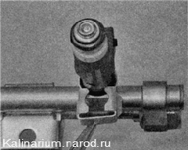
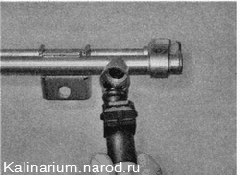

Форсунки - проверка и заменаДля выполнения проверки форсунок потребуются: — мультиметр (в режиме вольтметра и омметра); — провод (1,5—2 м); — изоляционная лента. Проверка 1. Подготавливаем автомобиль к выполнению работы. 2. Снимаем декоративную накладку двигателя. 3. Разъединяем колодки 1 и 2 жгута проводов форсунок. 
4. Включив зажигание, вольтметром измеряем напряжение на питающем выводе Е колодки 1 жгута проводов, которое должно быть не меньше 12 В (выводы обозначены буквами на колодке, «минусовой» шуп прибора должен быть подсоединен к «массе» двигателя). Предупреждение; По окончании измерения напряжения выключайте зажигание. Если напряжение не поступает на колодку или оно меньше 12 В, значит, разряжена аккумуляторная батарея, неисправна цепь питания или неисправен ЭБУ. 5. Проверяем электрическое сопротивление форсунок, для чего омметром измеряем сопротивление между выводом Е и остальными четырьмя выводами колодки 2. Вывод колодки, обозначенный буквой В, соответствует форсунке первого цилиндра, а выводы С, G и F — соответственно форсункам второго, третьего и четвертого цилиндров. У исправных форсунок сопротивление должно быть -13 Ом. 6. С помощью двух проводов напрямую от аккумуляторной батареи подаем на выводы колодки 2 напряжение 12 В — вывод Е соединяем с положительным выводом аккумуляторной батареи, а выводы В, С, G и F последовательно с отрицательным выводом батареи. При исправной форсунке должен быть слышен характерный щелчок при открывании клапана. 7. Неисправные форсунки заменяем. Снятие 1. Снимаем топливную рампу. 2. Отсоединяем колодки жгута проводов от форсунок (на фото вид со стороны радиатора). 
3. Снимаем с топливной рампы фиксатор форсунки. 
4. Вынимаем форсунку из рампы. 5. Аналогично снимаем три оставшиеся форсунки. Установка Устанавливаем форсунки в обратной последовательности. |